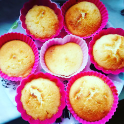

Data Engineer with 5+ years of experience building data-driven solutions in Google Cloud Platform, and 7+ years working with Python and SQL.
Strong background in analytics, engineering, and economics, focused on transforming business needs into reliable and efficient data systems.
Experienced in designing data pipelines, optimizing performance, and enabling data accessibility for analytics and product teams.
Motivated by working in a supportive and diverse team - bonus points if it's international. Excited at every opportunity to collaborate with colleagues across departments and share knowledge.
🛁 Bathroom Design Project
This is my new hobby:) I wasn’t sure how I wanted my new bathroom to look, so I just learned 3D modeling in Blender to design it.
View 360 Render →Data Lead (e-commerce, Poland)
Engineering Lead (non-profit, USA)
Data Engineering Support (non-profit, USA)
These tools directly reduced manual work, increased operational resilience, and improved productivity across teams.